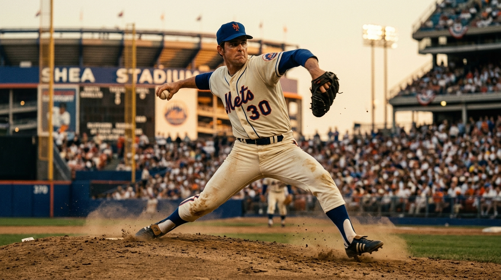
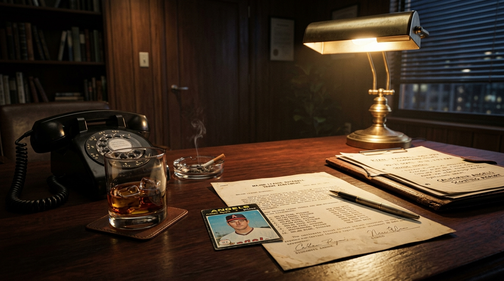
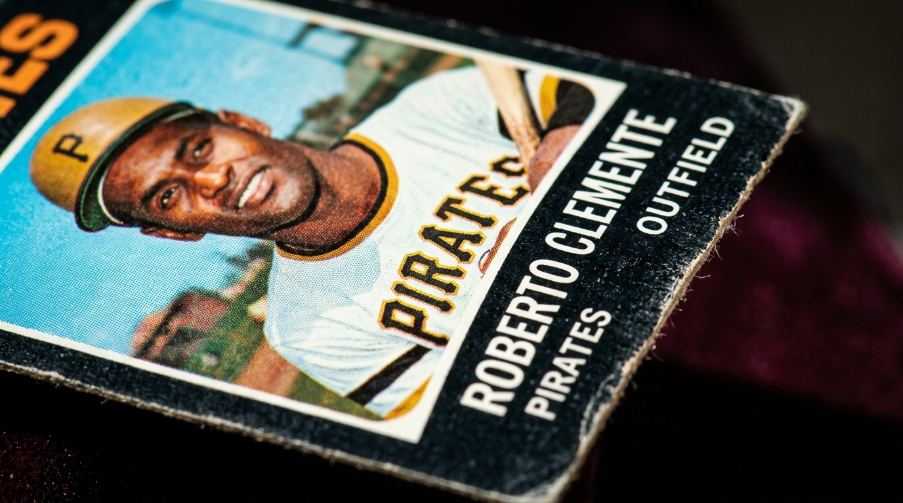
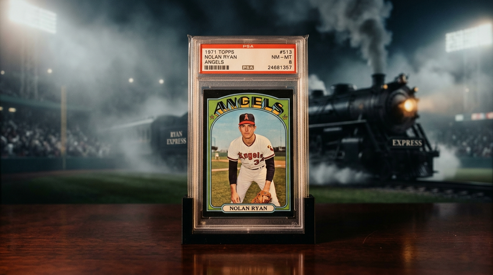
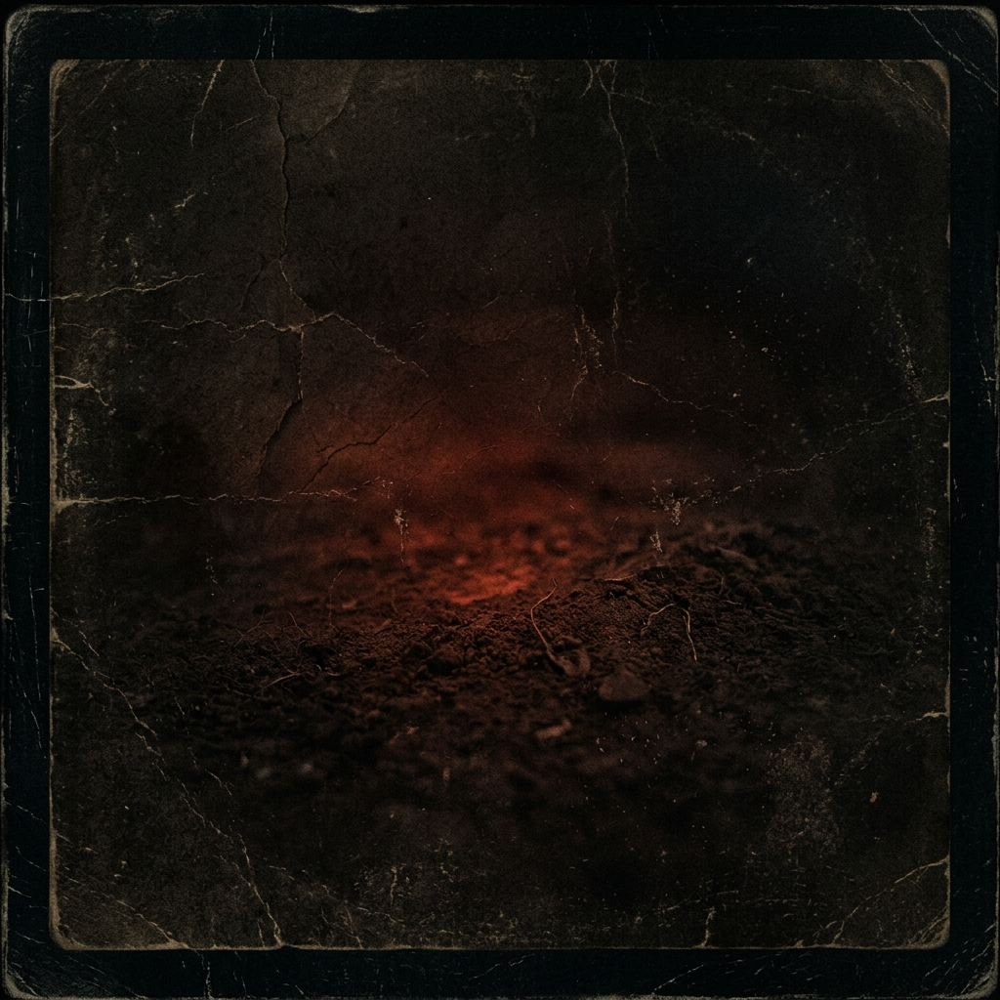

**Headline:**


**The Story:**
It’s 1971. The New York Mets have a young, wild flamethrower from Texas in their bullpen, and they don't quite know what to do with him.
Within months of this card being printed, they would trade him to the Angels for Jim Fregosi—arguably the worst trade in baseball history.

This 1971 Topps Nolan Ryan (#513) isn't just a piece of cardboard. It is an artifact of the exact moment before the "Ryan Express" became a baseball deity.

For vintage collectors, the 1971 Topps set is the ultimate white whale. The unforgiving, jet-black borders of this set mean that almost every card printed was chipped, dinged, and worn down by time.
Finding a '71 Ryan in "Excellent" condition means you aren't just holding early career stats—you are holding a survivor.
Secure a pristine piece of baseball’s greatest "What If" story.

**The Artifact Details:**
* **Player:**Nolan Ryan (The pre-mythology Mets
era)
* **Year:**1971 (Iconic Black Border Set)
* **Set:**Topps Baseball #513
* **Condition:**Excellent (A rare grade for the
notoriously fragile '71 borders)
* **Market Avg:**$150